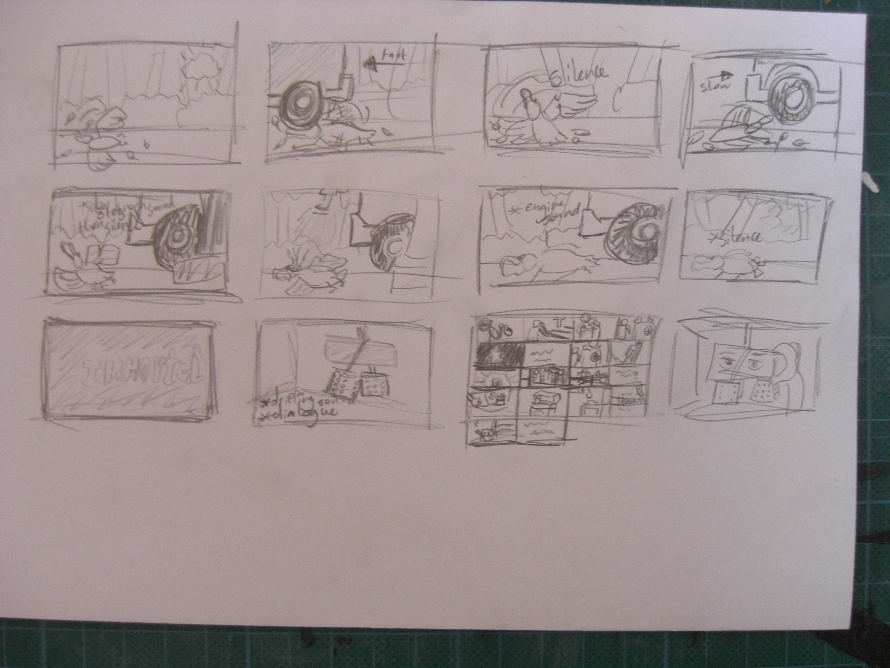
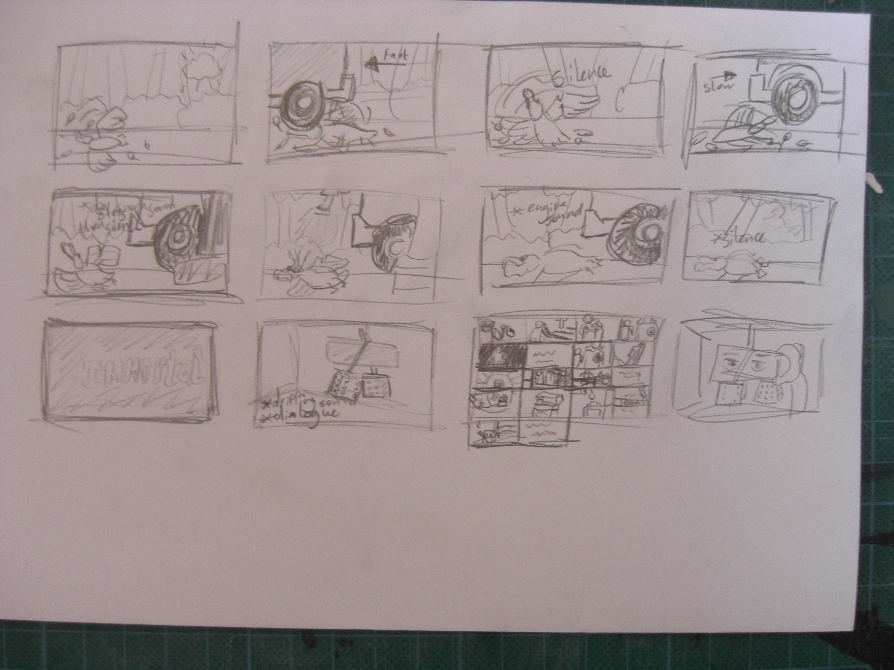
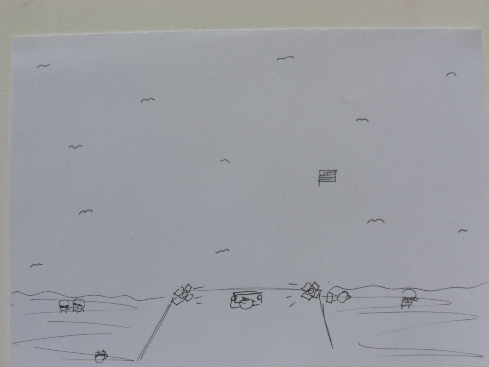
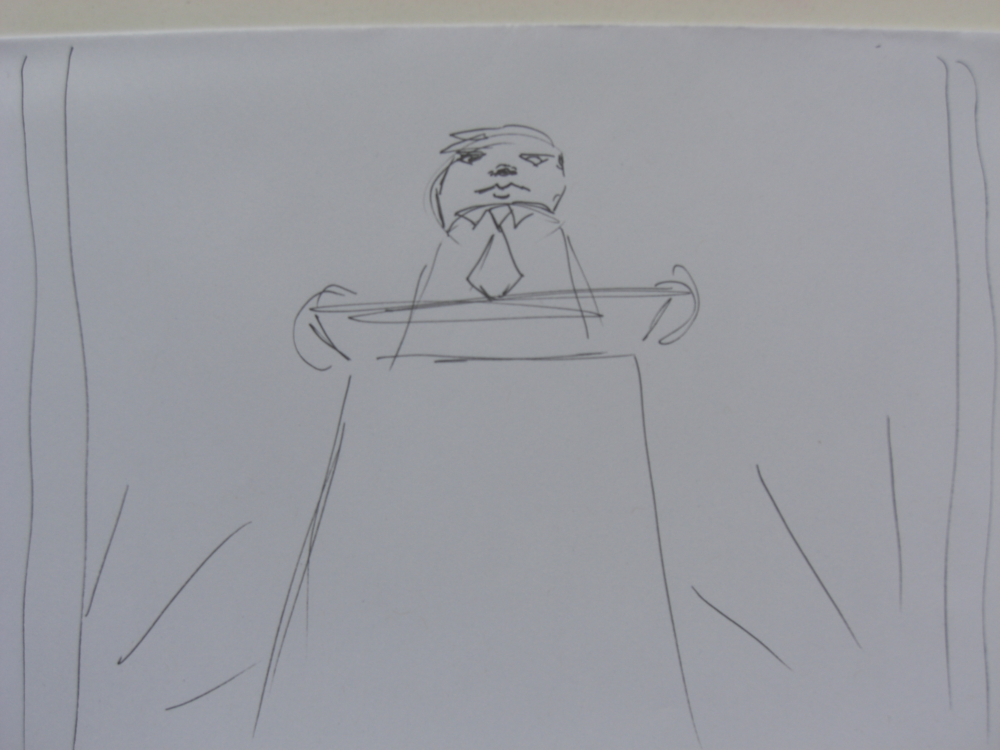
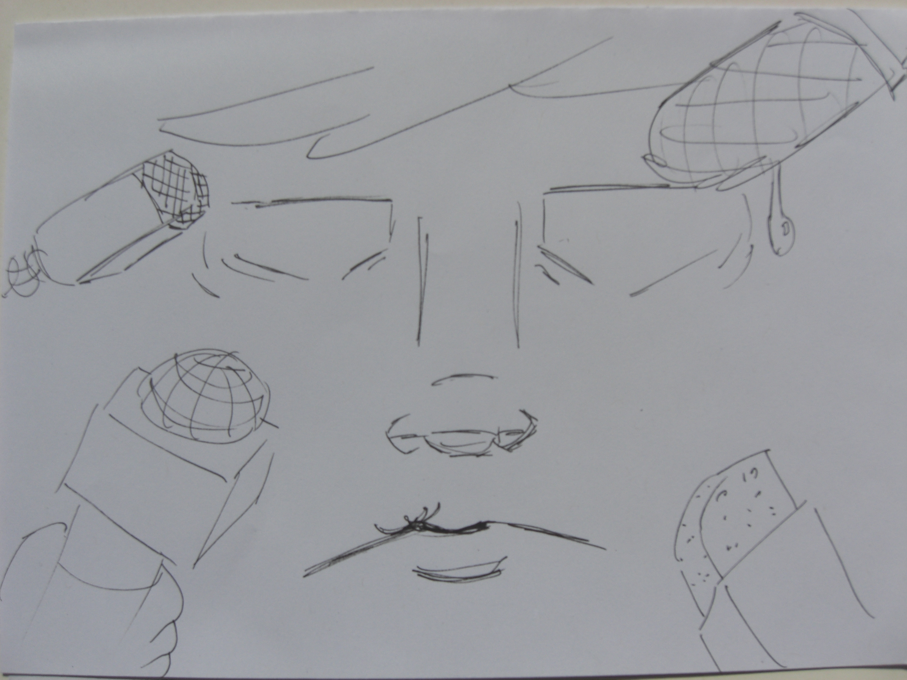
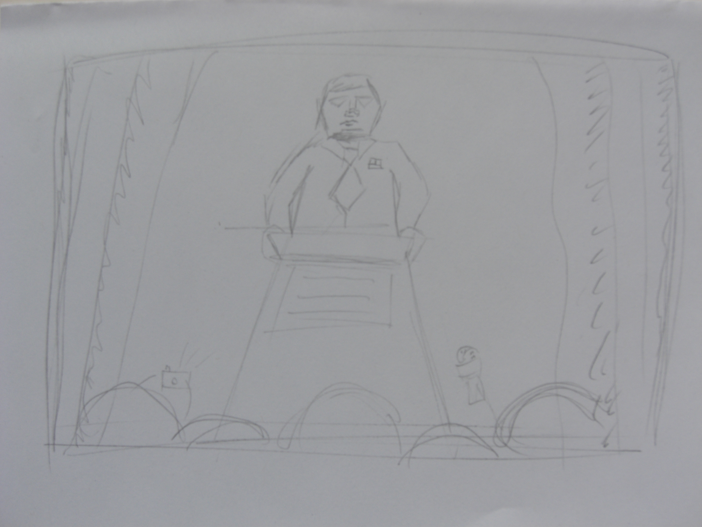
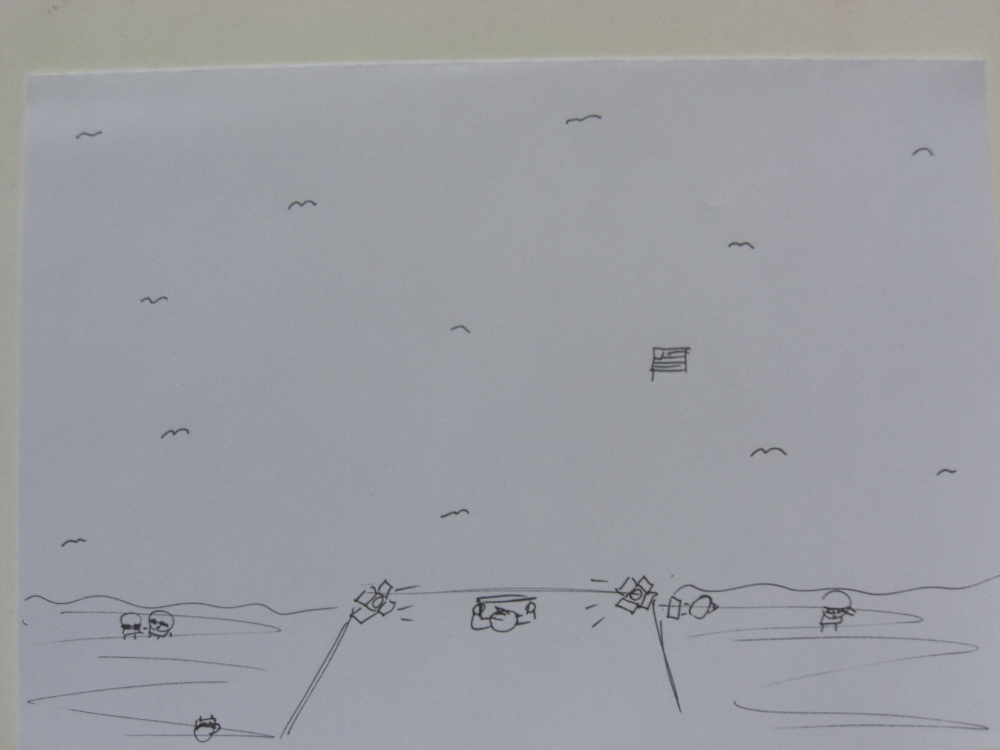
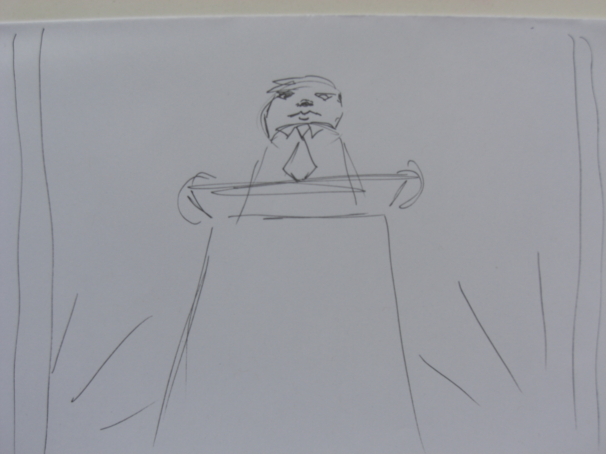
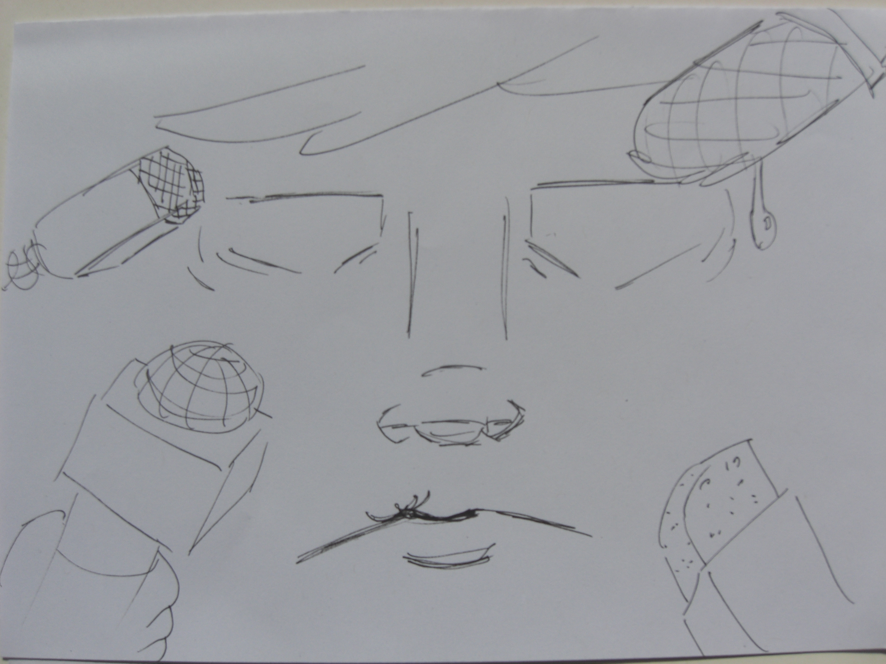
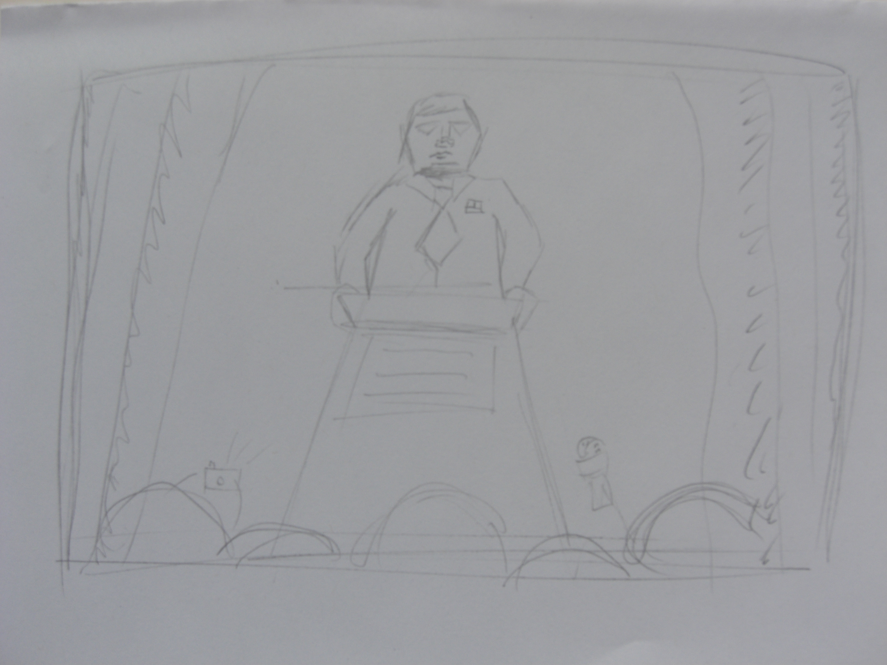

HKU Basis Vooropleiding Media

Animatie over 'thuis' als reststop tussen chaos en verantwoordelijkheid

Deze lange gang met zoom in gaf een luminal semi creepy gevoel.
Ik besloot in te spelen op die toon met mijn eindwerk


Teaser voor tentoonstelling over perspectief en zijn impact
Prototype met speelsere toon. Opgegeven want niet interessant en sfeervol genoeg

Brainstormingsessie


Verschillende ideen rangschikken en een definitief uitkiezen


Oefeningen StoryBoards


 

Opdracht: met verschillende camera angles de sfeer van een scene te veranderen
context: President verenigde staten geeft een speech


 






